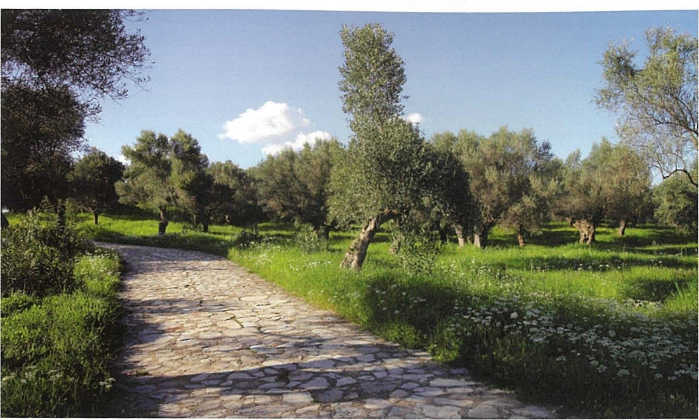
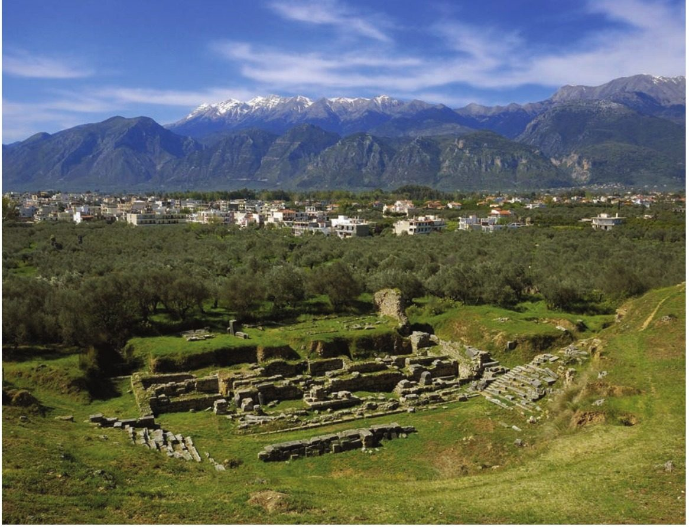

Spartan society to the Battle of Leuctra 371 BC · Lesson 15
The economy I: land ownership
Did every Spartan citizen once hold an equal share of the land, as Plutarch says — and if not, who really owned it?
Year 12 Ancient History · Section II, Option G · Present with → or space · Read on a phone with R

Connect · 3 minutes · cold call
From women’s land to everyone’s land
Property “could not be bought and sold in Sparta, but it changed hand through inheritance, dowries and gifts” (Cooley); Aristotle says selling an estate was “dishonourable”. A dowry was a daughter’s inheritance, and Aristotle says women owned almost two-fifths of the land. Helots farmed the Spartiates’ estates, and a Spartiate who could not pay his mess contribution lost his full rights.
Plutarch says Lycurgus once gave every Spartiate an equal lot. Was that ever true? If not, who owned Sparta’s land — and how did it pass from one owner to the next?
One key idea from Lesson 14, in one sentence.
Learning intentions and success criteria · 2 minutes
Today’s goals
- evaluate the evidence for how land was owned at Sparta, including Plutarch’s equal lots
- outline land ownership in a 5-mark answer
- explain Plutarch’s system and the reasons historians doubt it
- explain how Tyrtaeus, Aristotle and Plutarch disagree about land and dues
- write a 5-mark outline in 9 minutes that covers more than male Spartiates
Land ownership is who held the land and how it passed on: lots, sale, gifts, inheritance, dowries. Land management is who worked it and what it produced. A kleros (plural kleroi) is a Spartiate’s estate, or ‘lot’.
Note-making · today’s routine
How to structure your notes
questions and key terms
short phrases, arrows (→ led to), abbreviations (Plut. = Plutarch, Ar. = Aristotle)
- 1Listen and look firstDon’t copy while the slide is being explained.
- 2Write your own notes at each ✎ checkpointPhrases, not sentences. Arrows for cause and effect.
- 3Compare with the model notesThey appear one row at a time. Add what you missed in a second colour.
- 4Copy each cue question into the left columnLater, cover your notes and answer the cue questions from memory.
- 5Finish with a three-sentence summaryFive checkpoints: ownership, not management · Plutarch’s equal lots · testing the lots · other owners and why it mattered · the evidence of the fields.
Key vocabulary
Words you will use today
| Owning land | Meaning |
|---|---|
| kleros (pl. kleroi) | a lot or allotment of land; at Sparta, the estate that supported a Spartiate and paid his mess contribution |
| private property | land owned by a person or family, not by the state |
| bequeath | to leave property to someone after your death |
| dowry | property given with a daughter when she married; at Sparta, probably part of her inheritance |
| heiress | a daughter who inherits her father’s property because he has no sons |
| redistribution | taking land back from its holders and sharing it out again, usually more equally |
| Weighing the evidence | Meaning |
|---|---|
| medimnos (pl. medimnoi) | a Greek dry measure for grain, about 50 litres at Athens; Cooley’s translations call it a ‘measure’ (D57) or a ‘bushel’ (D63) |
| late tradition | stories written down long after the time they describe; Cooley’s term for Plutarch’s equal lots |
| intensive survey | archaeology without digging: teams walk fields in lines, recording surface finds such as broken pottery to map settlement |
| argument from silence | a conclusion drawn from what a source does not say (Lesson 3) |
| ownership · management | who held the land and how it passed on · who worked it and what it produced |
Spelling: Cooley’s translations use Greek forms (Lykourgos, Tyrtaios, Lakedaimonians, Lakonia, Polydoros, Kleomenes). In your own writing use Lycurgus, Tyrtaeus, Lacedaemonians, Laconia, Polydorus, Cleomenes.
1 · Ownership, not management · I do — what the question is about
Ask about ownership
- Who held the land?
- How did they get it?
- Could they sell it, give it away or leave it to their children?
- Who lost it — and what happened to them?
Areas for students to improve include focusing on land ownership rather than land management (a)In better responses, students were able to provide an outline of land ownership beyond just male Spartiates (a)
Who worked the land, what it grew and what the workers handed over. Useful background — but it does not answer a question about ownership.
In 2023 the HSC asked students to outline Spartan land ownership; this lesson is built around that question (section 6).
Check for understanding · point left for ownership, right for management
Ownership or management?
- 1Plutarch’s 9,000 lots for the Spartiates and 30,000 for the perioikoi Ownership — who held the land
- 2Helots worked the Spartiates’ estates Management — who worked it
- 3Land passed on through inheritance and dowries Ownership — how it passed on
- 4The land grew corn, olives and vines Management — what it produced
- 5Women owned almost two-fifths of the land Ownership — who held it (Aristotle)
- 6Helots handed over half the produce, or a fixed rent Management — what the workers paid
- 7The kings held estates in the territories of the perioikoi Ownership — who held it (Xenophon)
- 8Selling an estate was dishonourable, but owners could give it away or bequeath it Ownership — how it could pass on (Aristotle)
1 · Ownership, not management · I do — why owning land mattered
What the land grew — and what a Spartiate owed his mess

Cavanagh lists the region’s “agricultural commodities (corn, oil, wine), in particular of Messenia”.
… each mess member would contribute every month a bushel of barley-meal, eight gallons of wine, five pounds of cheese, and five half-pounds of figs, plus a very small sum of money for “extras”.
Plutarch, Life of Lykourgos 12.2 · written c. AD 100 · trans. B. Wilson · Cooley D63
So what? Aristotle says of the mess contribution that “anyone who cannot pay this tax cannot belong” (Lesson 7). A Spartiate’s status depended on owning a farm and on the helots who worked it.
1 · Ownership, not management · We do — two sources that disagree
Who worked the land — and what did they pay?
Like asses distressed by great burdens,
Bringing to their masters from grievous necessity
Half of all the produce the ploughland bears.
Tyrtaios, fragments 6–7, quoted by Pausanias 4.14.4–5 · mid-7th century BC · trans. K. Hughes · Cooley A6
The helots worked the land for them, paying a rent established in advance. Charging a higher rent was forbidden, so that the helots might make some profit and be happy to serve, and the masters would not be greedy for more.
Plutarch, Lakonian Customs 41 (Moralia 239E) · Plutarch lived from before AD 50 to after AD 120 · trans. in Cooley D36
How do they disagree?
Half the harvest (Tyrtaeus) or a fixed rent, set in advance (Plutarch). Both agree that helots farmed.
Which is closer to the period?
Tyrtaeus, “probably Spartan” in Cooley’s words, wrote in the mid-7th century BC. But his lines survive only because Pausanias quotes them in what Cooley calls his “(largely invented) history of Messenia”.
Ownership or management?
Management. Cooley: “Most helots worked for absentee landlords”. In a land-ownership answer, one phrase on helot labour is enough.
Notes checkpoint 1 of 5
Ownership, not management
Write your own notes first. Then compare, row by row, and add what you missed in a second colour.
2 · Plutarch’s equal lots · I do — the most famous answer, and the latest
Plutarch on the division of the land
[8.2] He persuaded the Lakedaimonians to deposit all their land into a single common pool, and then to make a brand new distribution of it, such that they would in future all live with one another on a basis of equality and an equal share of the resources needed to make a living. … [3] Having established this principle, he set about putting it into practice. He divided the land of Lakonia into 30,000 allotments, and allocated them to the dwellers-round about, the perioikoi. As for the land belonging to the city of Sparta itself, that he divided into 9000 allotments, which would belong to the 9000 Spartiates. Some say that Lykourgos made only 6000 allotments, and that 3000 were later added by Polydoros; others that Lykourgos allocated half the 9000 allotments, and Polydoros the other half. [4] Each man’s allocation was sufficient to produce an annual crop of 70 measures of barley, 12 measures for his wife, and an appropriate amount of other fresh produce. …
Plutarch, Life of Lykourgos 8.2–4 (part) · written c. AD 100 · trans. B. Wilson · Cooley D57
What was the aim?
Equality: everyone to live “on a basis of equality”.
Who received lots, and how many?
9,000 for the Spartiates, from the city’s own land; 30,000 for the perioikoi, from the rest of Laconia.
What did each Spartiate lot produce?
70 measures of barley a year, 12 for his wife, and other fresh produce.
What do the rival figures suggest?
Plutarch gives 9,000 lots, then reports two rival versions: 6,000 with 3,000 added later by King Polydorus, or half by each.
2 · Plutarch’s equal lots · I do — the system as Plutarch tells it
Plutarch’s system in four parts
- 1A cure for inequalityBefore Lycurgus, Plutarch says, “Savage inequalities prevailed”; afterwards all were to live “on a basis of equality”.
- 2Fixed numbers of lots9,000 for the Spartiates and 30,000 for the perioikoi — a rare mention of perioikic land, though as late as the rest of the account.
- 3A fixed yield70 measures of barley a year, 12 for his wife. Legend, Plutarch admits, has Lycurgus say that “the whole of Lakonia looked like the property of many brothers”.
- 4A lot for each new citizenThe elders inspected each newborn; a sturdy one was reared and given one of the 9,000 lots. The fixed yield implies that others — the helots — did the farming.
Having assessed the infant, they instructed him to rear it, if it seemed sturdy and robust, and they assigned to it one of the nine thousand allotments of land.
Plutarch, Life of Lykourgos 16.1 · trans. B. Wilson · Cooley D73
First, with regard to having land – that no one should have a larger share, but all citizens should have an equal share of the state’s land.
Polybius, Histories 6.45 · from a list of “Features of the Spartan system” · trans. in Cooley D56
Notice what is missing: no buying or selling, no inheritance, no dowries — and no rich or poor. Hold that thought for section 3.
Notes checkpoint 2 of 5
Plutarch’s equal lots
3 · Testing the equal lots · I do — the writer before the claim
Can we trust Plutarch here?
He wrote about AD 100, more than four centuries after Aristotle. Cooley: “much of his material also dates from after Sparta’s decline in the fourth century”.
Cooley’s rule: “any information in his text that is not explicitly identified as taken from a genuinely archaic or classical source should be considered as secondary material.” Plutarch names no early source for the equal lots.
“Some say … others”: Cooley notes that he “assembles a narrative from divergent opinions”.
Cooley: “his main aim was to draw characters which could be instructive as moral examples”, “not to provide historical analysis”. Here the lesson is greed cured by equality.
So: Plutarch tells us what later Greeks believed about Lycurgus’ Sparta. To test the equal lots, we need earlier evidence — starting with a philosopher writing in the 330s–320s BC.
3 · Testing the equal lots · We do — an earlier witness
Aristotle: land in the hands of a few
In addition to what has been said, one might censure the Lakedaimonians for an imbalanced distribution of wealth. For some of them have come to attain too much property, and others a tiny amount. Therefore the land has fallen into the hands of a small minority, and this through bad regulation of the laws. For the lawgiver made buying and selling an existing estate dishonourable, and rightly so, but because he allowed those who wanted to, the right to give away or bequeath their estates, the end result was, inevitably, exactly the same. And it is the case that almost two-fifths of the whole country is owned by women, since many women inherit and because of the giving of large dowries: it would have been better to draw up laws for there to be no dowry, or a small or moderate one. But as things stand one is permitted to give an heiress in marriage to whomever one wants; and if someone dies without making arrangements, then whoever he leaves as heir can give her in marriage to whomever he wishes.
Aristotle, Politics 2.9, 1270a15–29 · written 330s–320s BC · trans. in Cooley D54
What does he describe?
The opposite of equality: some Spartans with too much property, others with very little.
How did land move, if selling was dishonourable?
By gift and bequest — and through women, who inherited and brought large dowries.
Evidence or judgement?
Land that “has fallen into the hands of a small minority” is his evidence; “bad regulation of the laws” is his judgement.
Which century does it describe?
His own, the 4th century BC, after Leuctra. “Have come to attain” suggests a process over time.
3 · Testing the equal lots · I do — three writers, three centuries
Weighing the evidence
| Writer | Date | What he says about land | How far can we trust it? |
|---|---|---|---|
| Plutarch | about AD 100 | Equal lots: 9,000 for the Spartiates, 30,000 for the perioikoi; fixed yields | A biographer with a moral aim, centuries later; names no early source; reports rival figures |
| Aristotle | 330s–320s BC | Land has “fallen into the hands of a small minority”; women own almost two-fifths; estates could be given away or bequeathed | A critic, writing after Leuctra about his own day; his students had researched Sparta’s constitution |
| Tyrtaeus | mid-7th century BC | Helots bring their masters “Half of all the produce the ploughland bears”; Aristotle cites his Eunomia for calls to redistribute the land | Probably a Spartan, of his own time; these lines survive only in Pausanias’ quotation and Aristotle’s paraphrase |
Different authors, different centuries, different purposes — and the latest is the only one to describe equality.
3 · Testing the equal lots · I do — four reasons historians give
Why historians doubt the equal lots
Aristotle cites Tyrtaeus’ poem Eunomia as evidence that after the Messenian War “some were so afflicted as a result of the war that they thought the land should be redistributed” (Politics 1306b–1307a, Cooley D26). If Aristotle reads the poem rightly, holdings were already unequal in the 7th century BC.
Aristotle discusses Spartan land and the lawgiver’s rules about it, but never mentions an original equal division — an argument from silence, so weigh it with care.
Daughters inherited too — Hodkinson suggests half as much as a brother (Cooley, note on D54) — and Aristotle has land “divided accordingly” among many sons (D28). Fixed lots handed out at birth cannot be squared with property divided among children.
In the 3rd century BC the reforming kings Agis IV (c. 244–241 BC) and Cleomenes III (235–222 BC) tried to redistribute land; Plutarch says Agis proposed 4,500 Spartiate lots and 15,000 for the perioikoi. Reformers needed a Lycurgan precedent, and Plutarch’s figures may echo their plans.
“There is, however, no evidence that in reality the land holdings of different Spartiates were, or ever had been, on a similar scale. In the classical period, land was held as private property which was passed down the generations through inheritance and dowries”.
Check for understanding · gesture vote
“Every Spartiate once held an equal lot of land.”
Agree
Unsure
Disagree
Justify your vote with a named writer and a date.
3 · Testing the equal lots · We do · 8 minutes · building sentences together
Because, but, so
Plutarch says land was shared equally …
Aristotle says selling an estate was dishonourable, but …, so …
… the lawgiver allowed owners “to give away or bequeath their estates”, so “the end result was, inevitably, exactly the same”: land still fell into a few hands.
3 · Testing the equal lots · You do · 8 minutes · press K for the timer
Annotate Plutarch on the equal lots: O, V, P, R, L
- O — about how many centuries separate Plutarch from the Lycurgus he describes?
- V — who received lots, how many, and what did each produce?
- P — Plutarch wrote biographies to teach moral lessons. What lesson does this passage teach?
- R — he reports rival figures (6,000 or 9,000; Polydorus). What does this suggest about his sources?
- L — the passage never mentions inheritance, dowries or sale. Why is that a problem?
Then link it: ✓ where Tyrtaeus (Cooley A6) or Aristotle (Cooley D54) agrees, ✗ where they disagree. Short notes, your own words.
| Code | Model margin note |
|---|---|
| O | Plut., c. AD 100; L.’s supposed date c. 9th–8th c. BC (Lesson 3) → about 9 centuries or more |
| V | 9,000 Sp. lots + 30,000 perioikic; 70 measures barley + 12 for wife |
| P | moral: greed and “Savage inequalities” cured by equality |
| R | “Some say … others” → several traditions, no early source named |
| L | no sale, gift, inheritance, dowry → can’t explain how land moved |
| ✓ ✗ | ✓ Tyrt.: helots farm · ✗ Ar.: “small minority”; ✗ Ar.: women own ~⅖ |
Notes checkpoint 3 of 5
Testing the equal lots
4 · Other owners — and why it mattered · I do — beyond male Spartiates
Who else owned land?
Xenophon: “specified tracts of high quality land in many of the territories of the perioikoi shall belong to him, sufficient to sustain the royal household adequately but without excessive wealth.”Xenophon, Constitution of the Lakedaimonians 15.3 · probably late 390s or 380s BC · trans. B. Wilson · Cooley D9
Cooley: “Perioikoi also owned their own land and were free to engage in any economic activity.” The richest probably had links with “the royal families who owned perioikic land”.Cooley, ‘Perioikoi: a note’
Aristotle: “almost two-fifths of the whole country is owned by women”, through inheritance and large dowries (Lesson 14).Aristotle, Politics 1270a · Cooley D54
They farmed other people’s estates: Cooley says “Most helots worked for absentee landlords”. It is “possible” they had private possessions, but the land they worked was not theirs.Cooley, introduction to the helots (Lesson 8)
So what? There were owners beyond male Spartiates — women and the perioikoi — and the kings’ special estates, while the helots who did the work owned none of the land they farmed. This is the “beyond just male Spartiates” the 2023 markers rewarded.
4 · Other owners — and why it mattered · I do — the classical evidence of inequality
Rich and poor Spartiates — and why it mattered
… there are times when rich men provide wheat loaves instead of the usual ones.
Xenophon, Constitution of the Lakedaimonians 5.3 · probably late 390s or 380s BC · trans. B. Wilson · Cooley D61
This was because it was the very richest who bred the horses …
Xenophon, Hellenika 6.4.11 · on 371 BC · trans. in Cooley E54
Of 18 monuments known at Olympia for four-horse chariot victors between 560 and 364 BC, Cooley reports (citing Hodkinson), “of these 11 were for Spartans”. Some families “clearly had the wealth required to succeed (and to flaunt their success) at chariot racing on a Panhellenic stage”.
What do these show about land?
Horses and wheat bread took wealth, and a Spartiate’s wealth came from his land (he could not trade): some Spartiates held much more land than others in the classical period.
Aristotle: “if many sons are born, and the land divided accordingly, there will inevitably be many poor men” (D28). Cooley: “some Spartan families failed to produce their contributions for the syssitia, and therefore lost their full citizen rights.”
In short: “Equality among Spartiates was, however, never more than an ideal” (Cooley) — and unequal land shrank the citizen body (Lessons 7 and 28).
Notes checkpoint 4 of 5
Other owners — and why it mattered
5 · The evidence of the fields · I do — evidence filtered through no writer
What intensive survey found
- 1Close to SpartaFor the 6th and 5th centuries BC, “a mixture of sites ranging from the modest to larger and more prosperous ones”.
- 2Southern Laconia“A scatter of small sites”, for example around Helos (its exact site is uncertain).
- 3KytheraSites inland “given over mainly to production”; those on the coast “larger and more prosperous”.
- 4MesseniaA completely different pattern: “larger village communities; these evidently housed the helots who worked the land for the Spartans.”
5 · The evidence of the fields · We do — weigh it
What survey can — and cannot — tell us
Where people lived and farmed, and how that changed. For the classical period, survey close to Sparta “has been used to argue for a gradual transformation in rural settlement. The smaller, possibly more marginal, sites become fewer and their holdings perhaps were swallowed up by the larger, more dominant sites.”
Who owned a site, or under what rules. Broken pottery shows settlement, not ownership — and archaeological dates “can seldom be refined even as closely as to a generation or two” (Cavanagh).
Does the survey disprove Plutarch’s equal lots?
Not on its own: farms of different sizes could still sit on equal lots. But a mix of modest and prosperous sites, and small sites perhaps swallowed by larger ones, fits Aristotle’s land “fallen into the hands of a small minority” better than Plutarch’s equality.
Notes checkpoint 5 of 5
The evidence of the fields
Finish your notes
Summary: three sentences
- What was a kleros, and why did owning one matter?
- What does Plutarch claim, and why do historians doubt it?
- How was land really owned in the classical period, and by whom?
A kleros was a Spartiate’s estate, farmed by helots, and a man who could not pay his mess contribution from it lost his full citizenship. Plutarch, writing about AD 100, claims Lycurgus made 9,000 equal Spartiate lots and 30,000 perioikic ones, but he names no early source, and earlier evidence shows inequality: Aristotle says “the land has fallen into the hands of a small minority”, and his report of Tyrtaeus’ Eunomia suggests calls for redistribution in the 7th century BC. In the classical period land was private property that passed by gift, inheritance and dowry, owned unequally by Spartiates, by women (almost two-fifths, Aristotle says), by the perioikoi and, in special estates, by the kings, while survey shows a mixture of modest and prosperous sites near Sparta and larger villages that evidently housed helots in Messenia.
6 · Answering HSC questions
Today’s lesson was examined in 2023
25 marks, about 45 minutes — about 1.8 minutes a mark. 5 marks ≈ 9 minutes.
NESA: “Sketch in general terms; indicate the main features of”.
Who held the land and how it passed on — not who farmed it.
We take the question apart, read the criteria and the 2023 feedback, and you write it in 9 minutes. Then we test NESA’s sample answer against Cooley, compare a model, and you mark your own.
HSC 2023 · Section II · Question 11 (a) · 5 marks
Outline the key features of Spartan land ownership in this period.
I do — watch the question taken apart. Then you write it, in 9 minutes.
HSC 2023 Q11(a) · I do — deconstruct the question
What the question is really asking
“Indicate the main features”: several features, each sketched briefly with a precise detail. No long argument — but say whose claim each feature is.
The kleroi and why they mattered · Plutarch’s equal lots and the evidence of inequality · private property passed by gift, inheritance and dowry · owners beyond male Spartiates — women and the perioikoi — and the kings’ special estates.
Archaic and classical Sparta, to 371 BC. Aristotle wrote a generation or two after it (330s–320s BC), about his own day; Plutarch wrote about AD 100 — label him as late.
About 9 minutes · five or six features · two or three named writers · about 130–190 words · no introduction.
HSC 2023 Q11(a) · the marking guidelines and the markers’ feedback
What the markers rewarded
| Marks | Criteria (2023, part (a)) |
|---|---|
| 5 | Provides an informed outline relevant to the question · Communicates effectively using appropriate historical terms and concepts |
| 4 | Provides a sound outline relevant to the question · Communicates using appropriate historical terms and concepts |
| 3 | Provides an outline relevant to the question · Communicates using some historical terms and concepts |
| 2 | Provides some information relevant to the question · May use some historical terms and/or concepts |
| 1 | Makes a general statement(s) relevant to the question |
provide an outline of land ownership beyond just male Spartiates (a)
focusing on land ownership rather than land management (a)
“An outline” → “a sound outline” → “an informed outline” — specific features, named evidence and Spartan terms: kleroi, homoioi, perioikoi.
Source: NESA, 2023 HSC Ancient History Marking Guidelines (Section II, part (a)) and the 2023 marking feedback for Question 11, quoted exactly.
HSC 2023 Q11(a) · You do · 9 minutes · press K for the timer
Outline the key features of Spartan land ownership in this period. (5 marks)
- ownership — who held land and how it passed on — not management
- the kleroi, and Plutarch’s equal lots labelled as his claim
- the earlier evidence of inequality
- owners beyond male Spartiates — women and the perioikoi — and the kings’ special estates
- two or three named writers; about 130–190 words, no introduction
Start: “Spartiate land was held as kleroi, estates worked by helots, …”
Your plan: the table of three writers (slide 16) and the four kinds of owner (slide 22).
HSC 2023 Q11(a) · Check your answer — NESA’s sample answer, tested against Cooley
NESA’s sample answer, annotated
Sample answer from the NESA 2023 HSC Ancient History Marking Guidelines · 101 words
Marker’s margin
Even sharper: begin “Plutarch claims …”, name Aristotle and Xenophon with dates, and add the perioikoi’s land and the kings’ estates.
HSC 2023 Q11(a) · a model written for this lesson
The system, the doubts, then every kind of owner
Model written for this lesson, from the unit’s modelled response MR-6, corrected · about 190 words, about 9 minutes
Marker’s margin
HSC 2023 Q11(a) · three answers that fall short
Why answers drop marks
Spartan land was farmed by the helots, who handed over half of what they grew. The Eurotas valley produced barley, olives and wine, which fed the messes.
Who worked the land and what it grew: management. NESA asked for “land ownership rather than land management”.
Lycurgus gave every Spartiate an equal kleros. Later, rich Spartiates gained more land, and poorer ones lost their lots and their citizenship.
Real features, but only male Spartiates — and the equal lots stated as fact. Better responses went “beyond just male Spartiates”.
Lycurgus divided Sparta into 30,000 equal lots for the Spartiates, and no one could sell their land, give it away or leave it to anyone.
The 30,000 were Plutarch’s lots for the perioikoi (9,000 for Spartiates), and Aristotle says owners could “give away or bequeath their estates”.
Written for this lesson to show the marking criteria — not real student answers.
HSC 2023 Q11(a) · Self-mark
Mark your own answer
Fewer than five ticks? Add the missing feature in a second colour.
Circle every owner you named. If the only one is “Spartiates”, the answer has not yet gone beyond male Spartiates.
Explain why historians doubt that Spartan land was ever divided into equal lots. (6 marks)
To what extent were Spartan citizens equal in this period? (12 marks)
Practice and review · 1 of 7 · sequencing · written for this lesson
Put these in order, earliest first — and say what each shows about land
- APlutarch writes that Lycurgus made 9,000 Spartiate lots
- BTyrtaeus composes his Eunomia, which Aristotle later cites for calls to redistribute the land
- CAristotle writes that almost two-fifths of the land is owned by women
- DXenophon describes the kings’ estates in the territories of the perioikoi
- EThe Spartan cavalry at Leuctra rides horses bred by “the very richest”
- FA dense network of small farmsteads and hamlets develops in Laconia
- GKing Cleomenes III reigns and reforms Sparta’s institutions
- HPolybius lists an equal share of land as a feature of the Spartan system
- 1 · B (mid-7th century BC) — inequality already, if Aristotle reads him rightly (D26).
- 2 · F (6th and 5th centuries BC) — farms of many sizes near Sparta (Cavanagh).
- 3 · D (probably late 390s or 380s BC) — a special royal holding (D9).
- 4 · E (371 BC) — great estates behind the horses (E54).
- 5 · C (330s–320s BC) — land owned by women, and “fallen into the hands of a small minority” (D54).
- 6 · G (235–222 BC) — a reforming king; reformers needed a Lycurgan precedent.
- 7 · H (2nd century BC) — the equal-land ideal, written after the reforms (D56).
- 8 · A (c. AD 100) — the fullest and latest account of equal lots (D57).
Practice and review · 2 of 7 · true, false, justify · Chapter 11 Activity B, items 1–2, and items written for this lesson
True or false? Justify with a source
- 1Plutarch says Lycurgus divided the land of Sparta into 9,000 lots. True — “As for the land belonging to the city of Sparta itself, that he divided into 9000 allotments” (D57) — though he also reports that some say Lycurgus made only 6,000.
- 2Aristotle says land at Sparta was shared equally among the citizens. False — “the land has fallen into the hands of a small minority” (Politics 1270a, D54).
- 3Aristotle says the lawgiver let Spartiates give away or bequeath their estates. True — “he allowed those who wanted to, the right to give away or bequeath their estates” (D54).
- 4Aristotle quotes Tyrtaeus’ own words demanding a new division of the land. False — he paraphrases: the Eunomia is his evidence that some “thought the land should be redistributed” (D26); Cooley: Tyrtaeus “Apparently” mentioned it.
- 5Xenophon says the kings held land in the territories of the perioikoi. True — “specified tracts of high quality land in many of the territories of the perioikoi shall belong to him” (D9).
- 6The perioikoi owned no land of their own. False — “Perioikoi also owned their own land” (Cooley, ‘Perioikoi: a note’).
- 7Intensive survey shows who owned each farm near Sparta. False — it maps where people lived and worked from surface finds, not ownership; and its dates “can seldom be refined even as closely as to a generation or two” (Cavanagh).
- 8Most known monuments to four-horse chariot victors at Olympia between 560 and 364 BC were for Spartans. True — of 18, “of these 11 were for Spartans” (Cooley, citing Hodkinson; note on C54).
Practice and review · 3 of 7 · cloze · Chapter 11 Activity C, items 1–3; items 4–8 written for this lesson
Fill the gaps
- A Spartan allotment of land was called a kleros.
- Plutarch says each Spartiate lot produced 70 measures of barley a year.
- Aristotle says almost two-fifths of the land was owned by women.
- Plutarch says Lycurgus made 9,000 lots for the Spartiates.
- Aristotle says the lawgiver made buying and selling an estate dishonourable.
- Xenophon says each king held high-quality land in the territories of the perioikoi.
- Walking fields in lines and recording surface finds is called intensive survey.
- In Messenia, survey found larger villages that evidently housed the helots.
Practice and review · 4 of 7 · write an analytical paragraph · Chapter 11 Activity D
How useful is Plutarch’s account of equal lots for understanding Spartan land ownership?
Plutarch’s account is of little use as evidence for how land was owned in classical Sparta, but valuable as evidence of the Lycurgan ideal later Greeks believed in. Writing about AD 100, he says Lycurgus divided “the land belonging to the city of Sparta itself” into “9000 allotments, which would belong to the 9000 Spartiates”, each producing “an annual crop of 70 measures of barley, 12 measures for his wife”, and that a sturdy newborn was assigned “one of the nine thousand allotments of land”. On this picture land was a gift of the state, tied to citizenship and never bought, divided or accumulated. Yet Plutarch names no early source, reports rival figures, and, as Cooley says, aimed to draw moral examples, “not to provide historical analysis”. Earlier evidence describes the opposite: Aristotle, in the 330s–320s BC, says “the land has fallen into the hands of a small minority”, through gifts, bequests and dowries, and cites Tyrtaeus for calls to redistribute land in the 7th century BC; Plutarch’s figures may even echo the 3rd-century reforms of Agis IV and Cleomenes III. Plutarch therefore shows the equality Spartans were later believed to have had, while Aristotle remains the better guide to how land was actually owned.
Practice and review · 5 of 7 · extended response · HSC-style, written for this lesson
To what extent was land ownership in Sparta equal during this period? (15 marks)
Use evidence from relevant sources. Plan it in four moves:
- Thesis in your first sentence — for example: equal in the ideal that later writers described, unequal in practice throughout the period.
- The case for equality: Plutarch’s 9,000 lots and lots given at birth (Cooley D57, D73); Polybius (D56) — and why these are late tradition; the classical homoioi (‘Peers’) ideal (Xenophon, D51) was about status and lifestyle, not equal land.
- The case against: Tyrtaeus’ Eunomia in Aristotle (D26); land “fallen into the hands of a small minority” and women’s two-fifths (D54); many sons, “many poor men” (D28); the rich at the messes, in the cavalry and in chariot racing (D61, E54, C52); the kings’ and the perioikoi’s land (D9).
- Historiography and archaeology: Cooley’s “no evidence” that holdings were ever “on a similar scale”; Hodkinson’s “more enduring privately-oriented, wealth-based society”; the survey’s modest and prosperous sites — and what survey cannot show.
Practice and review · 6 of 7 · review · Chapter 11 Quick Check for §2, answers written for this lesson
Review (1): Plutarch’s equal lots
- How many lots did Plutarch say were made for Spartiates, and how many for perioikoi? 9,000 for the Spartiates, from “the land belonging to the city of Sparta itself”, and 30,000 for the perioikoi (D57) — or, he reports, 6,000 at first, with 3,000 added by Polydorus.
- What did each Spartiate lot produce? 70 measures (medimnoi) of barley a year, 12 for his wife, and other fresh produce.
- What happened, in Plutarch’s account, when a healthy newborn was approved? The elders of the tribe inspected it; if it “seemed sturdy and robust” it was reared and “assigned … one of the nine thousand allotments of land” (D73).
- Why does Plutarch’s report of rival figures matter? He was combining different traditions, not copying one reliable record, and names no early source; Cooley says he “assembles a narrative from divergent opinions”.
Practice and review · 7 of 7 · review · Chapter 11 Quick Check for §3, answers written for this lesson
Review (2): testing the equal lots
- According to Aristotle, how did land fall into few hands if selling it was dishonourable? Owners could “give away or bequeath their estates”, and many women inherited or received large dowries, so “the end result was, inevitably, exactly the same” (D54).
- What does Tyrtaeus’ Eunomia suggest about land in the 7th century BC? Aristotle says it shows that after the Messenian War some “thought the land should be redistributed” (D26): holdings were already unequal — if his paraphrase is right.
- Why might the reforms of Agis IV and Cleomenes III have shaped the equal-lots story? In the 3rd century BC they tried to redistribute land and needed a Lycurgan precedent; Plutarch’s figures may echo their plans (Agis proposed 4,500 Spartiate lots and 15,000 perioikic).
- Name two groups other than male Spartiates who owned land, and one special kind of Spartiate holding. Women (almost two-fifths, Aristotle, D54) and the perioikoi (Cooley); the kings’ estates in perioikic territory (Xenophon, D9).
- What can intensive survey tell us about land, and what can it not? It shows where people lived and farmed and how that changed — modest and prosperous sites near Sparta, larger villages that evidently housed helots in Messenia — but not who owned the land, or the rules, and it dates sites only roughly.
Check for understanding · hinge question · hold up 1, 2 or 3 fingers
Which writer says almost two-fifths of the land belonged to women?
- 1Tyrtaeus, mid-7th century BC
- 2Aristotle, 330s–320s BC
- 3Plutarch, about AD 100
2 — Aristotle: “almost two-fifths of the whole country is owned by women” (Politics 1270a, Cooley D54). Tyrtaeus wrote about the helots’ dues; Plutarch about equal lots.
Exit ticket · before you leave
One sentence
One reason historians doubt the equal lots is …
Next lesson: the economy II — technology: what the craftsmen of Laconia made from bronze, lead and clay.
Sources and credits
Where everything comes from
Quoted from the translations in M. G. L. Cooley (ed.), Sparta, LACTOR Sourcebooks in Ancient History 21, 2nd edn (Cambridge University Press, 2023): Plutarch, Life of Lykourgos 8.1–4, 12.2 and 16.1 (D57, D63, D73, trans. B. Wilson) and Lakonian Customs 41 (D36); Aristotle, Politics 1270a15–29, 1270a29–b6, 1271a and 1306b22–1307a5 (D54, D28, D62, D26); Tyrtaeus frs 6–7 (A6, trans. K. Hughes); Xenophon, Constitution of the Lakedaimonians 5.3 and 15.3 (D61, D9, trans. B. Wilson) and Hellenika 6.4.11 (E54); Polybius, Histories 6.45 (D56); Dicaearchus in Athenaeus (E77, teacher notes). Plutarch, Life of Agis 8 is paraphrased (not in Cooley). Cooley’s introductions to wealth and property (D52–D59), women, the helots, the literary sources and Spartan property and wealth (E71–E76), ‘Perioikoi: a note’, his introduction to oliganthropia, and his notes on D54 and C54, with S. Hodkinson, Property and Wealth in Classical Sparta (2000), as cited there; W. G. Cavanagh, ‘Introduction to Lakonian Archaeology’, in Cooley.
- Olive groves in the fertile Eurotas valley today — Clarke & Garner, Fig 6.2
- A view across the Eurotas valley to the Taygetus range, with ancient ruins in the foreground — Bradley, Fig 3.3
Books: Clarke & Garner, Spartan society textbook (school copy); P. Bradley, The Ancient World Transformed (Cambridge University Press, 2014).
Textbook images are reproduced for teaching, with the source given under each one. Drawn for this lesson: the survey map (from Cavanagh, in Cooley; coastline from Natural Earth, public domain), the “Weighing the evidence” table and the ownership or management sort.
HSC question, marking criteria, sample answer and marking feedback: NSW Education Standards Authority, 2023 HSC Ancient History examination, marking guidelines and marking feedback. © NESA. NESA glossary of key words (“outline”). The models and the practice questions were written for this lesson; the HSC model is the unit’s MR-6, corrected.